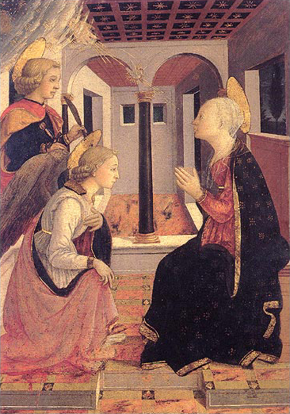

Renesans w Prato
Filippo Lippi (ok. 1406, Florencja — 1469, Spoleto) oraz jego syn Filippino (ok. 1457, Prato — 1504, Florencja) należeli do najbardziej poważanych artystów piętnastowiecznego Prato, toskańskiej miejscowości położonej 15 km na północ od Florencji.
Wystawa, przygotowana przez paryskie Musée du Luxembourg, obejmuje około pięćdziesięciu malowideł i rzeźb z XIV i XV stulecia, których nigdy dotąd nie pokazywano we Francji.
Ekspozycja stwarza jedyną w swoim rodzaju okazję do odkrywania bogatego dorobku tego miasta, stanowiącego bez wątpienia centrum artystyczne swoich czasów, głównie ze względu na innowacje stylistyczne wprowadzane przez Filippa Lippi i jego syna.
Ukazuje również narodziny nowoczesnego sposobu malowania, la Maniera, rozwijanego przez ich współpracowników, Fra Diamante i Domenico di Zanobi, oraz ich licznych następców, jak Tommaso di Piero zwany il Trombetto, Luca Signorelli, Zanobi Poggini oraz Raffaellino del Garbo.
Filippo et Filippino Lippi — La Renaissance à Prato
Wystawa czynna od 25 marca do 2 sierpnia 2009 roku.